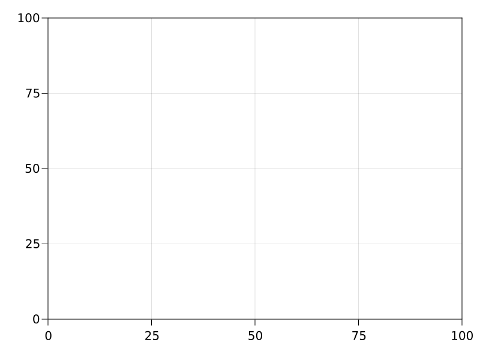
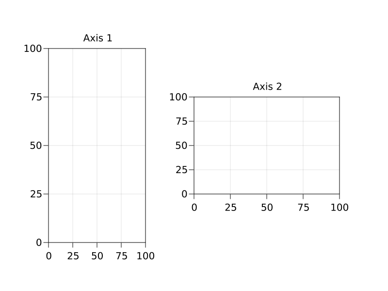

Layoutables
All examples in this section are presented as static CairoMakie vector graphics for clarity of visuals. Keep in mind that CairoMakie is not interactive. Use GLMakie for interactive widgets, as WGLMakie currently doesn't have picking implemented.
Layoutables are objects which can be added to a Figure or Scene and have their location and size controlled by a GridLayout. A Figure has its own internal GridLayout and therefore offers simplified syntax for adding layoutables to it. If you want to work with a bare Scene, you can attach a GridLayout to its pixel area. The layoutscene function is supplied for this purpose.
A layout only controls an object's position or bounding box. A Layoutable can be controlled by the GridLayout of a Figure but not be added as a visual to the Figure. A Layoutable can also be added to a Scene without being inside any GridLayout, if you specify the bounding box yourself.
Adding to a Figure
Here's one way to add a Layoutable, in this case an Axis, to a Figure.
using CairoMakie
f = Figure(resolution = (800, 600))
ax = Axis(f[1, 1])
f
Adding to a Scene
And here's how you can add the same Layoutable to a Scene, which is the primitive object underlying a Figure. As discussed above, layoutscene is an older convenience method to create a Scene with an attached GridLayout that tracks its size. This is mostly not needed anymore since Figures were added.
using CairoMakie
scene, layout = layoutscene(resolution = (800, 600))
ax = layout[1, 1] = Axis(scene)
sceneSpecifying a boundingbox directly
Sometimes you just want to place a Layoutable in a specific location, without it being controlled by a dynamic layout. You can do this by setting the bbox parameter, which is usually controlled by the layout, manually. The boundingbox should be a 2D Rect, and can also be an Observable if you plan to change it dynamically. The function BBox creates an FRect2D, but instead of passing origin and widths, you pass left, right, bottom and top boundaries directly.
Here's an example where two axes are placed manually:
using CairoMakie
f = Figure(resolution = (800, 600))
Axis(f, bbox = BBox(100, 300, 100, 500), title = "Axis 1")
Axis(f, bbox = BBox(400, 700, 200, 400), title = "Axis 2")
f
Deleting Layoutables
To remove layoutables from their layout and the figure or scene, use delete!(layoutable).